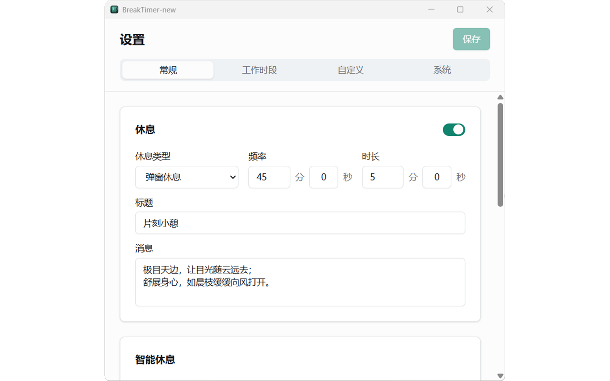
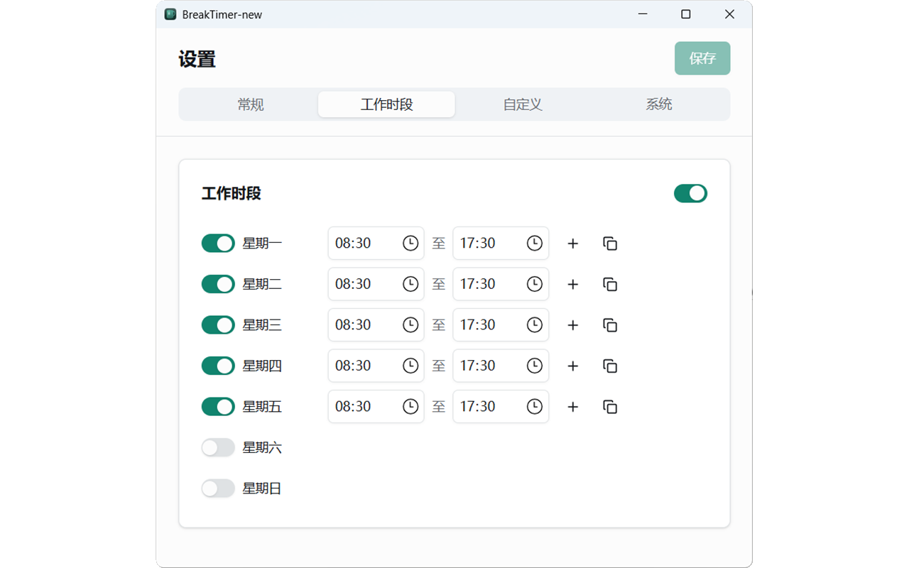
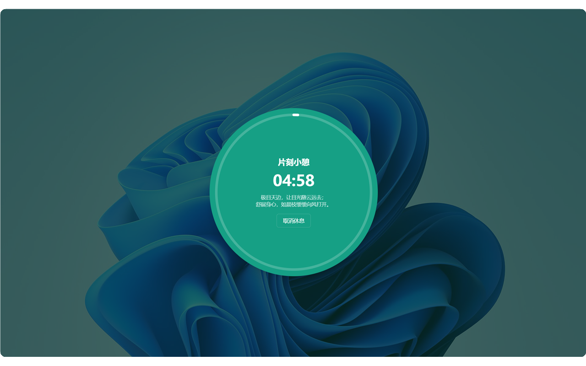
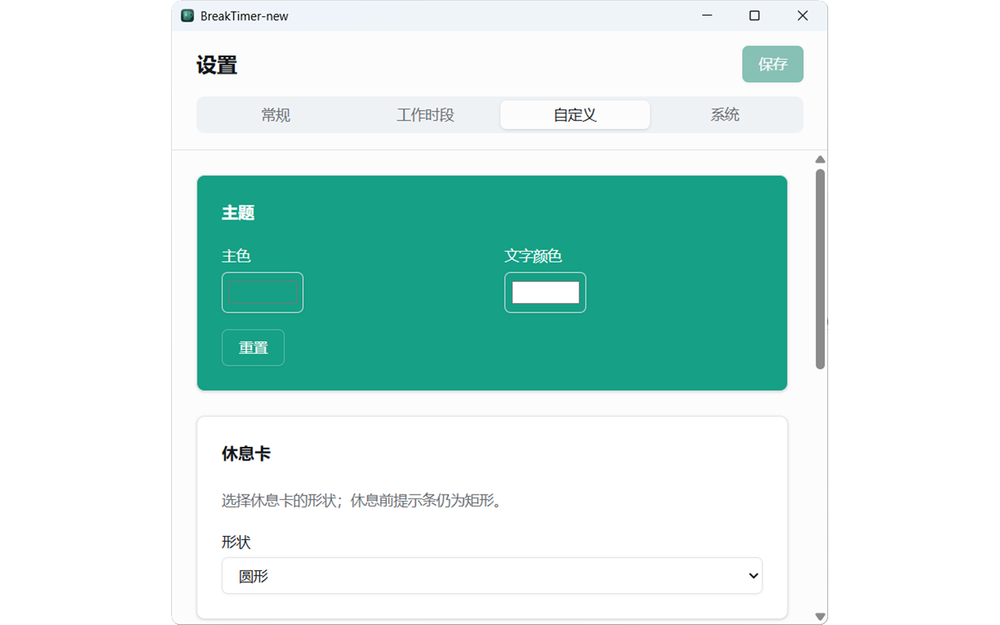

百度网盘
安装版 + 便携版
国内访问稳定，打开分享后按提示填写提取码。
提取码：发布后公布
打开百度网盘从工作时段到提醒方式，按你的节奏配置；需要专注时，它只在托盘里安静计时。
01 REST
按你的节奏安排休息的频率与时长；当你长时间离开电脑，计时会自动归零，让每一次提醒都恰到好处，而非多余打扰。
界面节选 · 常规设置

02 HOURS
为每一天分别设定工作时段；提醒只在你工作的时候轻轻出现，而当新一段工作开始时，计时重新开始。
界面节选 · 工作时段

03 BREAK
你可以选择让休息铺满整个屏幕，也可以只收一条安静的系统通知。休息来临时，推迟、跳过或立刻休息，都由你决定。
界面节选 · 全屏休息

04 STYLE
调一调主题色、休息卡的形状、提示音与背景遮罩，让每一次休息提醒，都更贴近你的习惯与审美。
界面节选 · 自定义

安装版与便携版都放在网盘里，选一个顺手的入口即可。GitHub Releases 保留版本历史与 SHA256SUMS 校验和。
本次发布尚未配置网盘链接。可以先用 GitHub Releases 中的安装版或便携版；补齐网盘链接并重新部署后，入口会显示在这里。
BreakTimer-new_v*_x64-setup.exe
日常安装使用。默认按当前用户安装，通常不需要管理员权限。
BreakTimer-new_v*_x64-portable.zip
解压到可写目录并运行 breaktimer-new.exe。设置和运行数据保存在程序目录的
data\ 中，可随文件夹一起移动。
系统要求：Windows 10 或 Windows 11，64 位；需要 Microsoft Edge WebView2 Runtime。